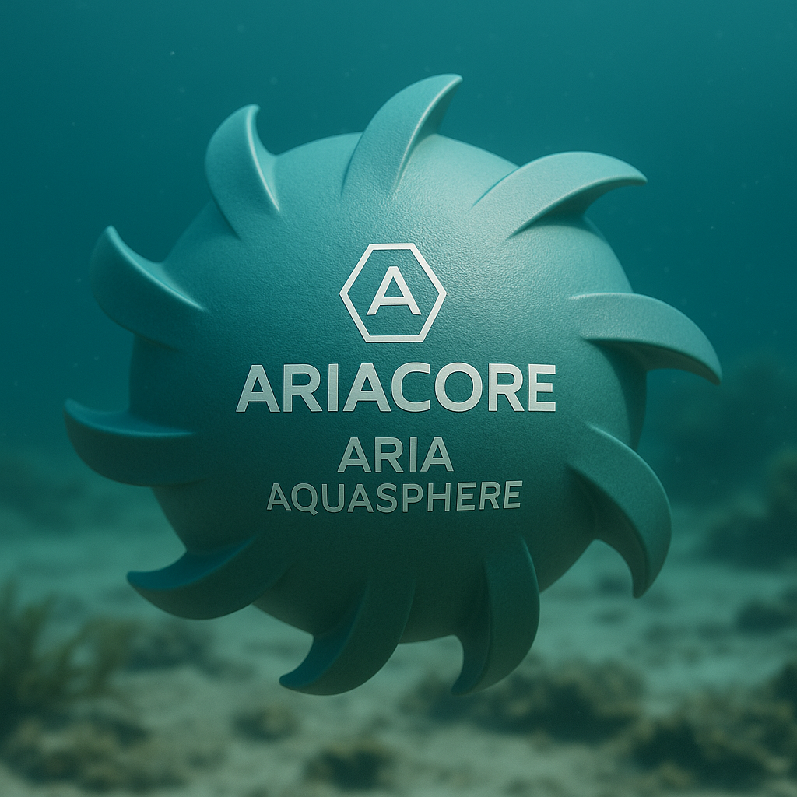

Autonomous terrain restoration for forests, coastlines, and aquatic ecosystems.

The SeedSphere rolls across terrain after autonomous drone deployment, aerating soil with its flexible spike shell while gently releasing thousands of native plant seeds. Its TPU shock-absorbing core allows it to survive impacts and navigate uneven ground.

Designed for underwater ecosystems, the AquaSphere uses fin-based traction to spread seagrass, kelp spores, and reef-support seeds across ocean floors. It kicks up sediment to bury seeds and promote stable marine regrowth.